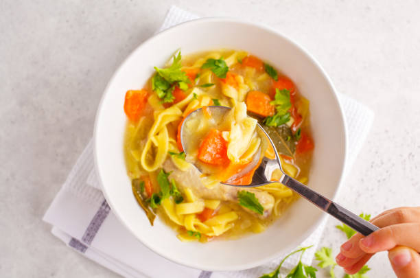
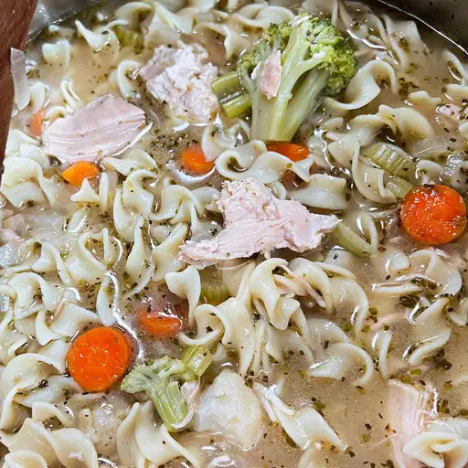

.
.
.
.
Melt butter in a large pot over medium heat. Add onion and celery and cook until just tender, about 5 minutes.
Add chicken broth, vegetable broth, chicken, egg noodles, carrots, basil, oregano, salt, and pepper. Stir to combine and bring to a boil.
Reduce heat and simmer for 20 minutes
 